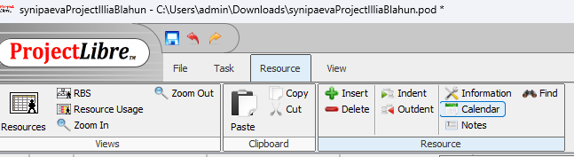
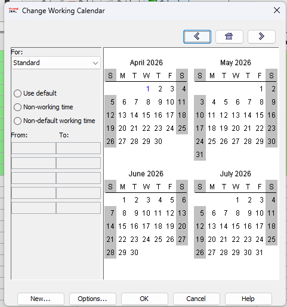
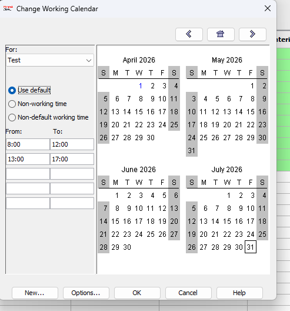
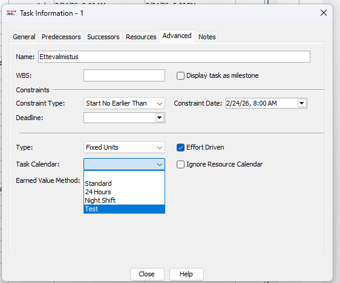
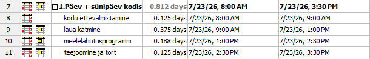

🎯 Eesmärk: Selles juhendis näidatakse, kuidas luua ProjectLibre's uus töökalender, seadistada tööpäevad ja -ajad ning rakendada seda projekti ülesannetele.
Uue kalendri loomine
Kalendri loomiseks pead minema oma projekti vahekaardile Resource ja Calendar.

Kalendri menüü
Teie jaoks avaneb vahekaart, kus on näha kõik kalendrid, seaded ja kuupäevad.

Uue test-kalendri loomine
Vajutame nuppu New ja loome uue kalendri nimega TestKalender ning teeme sellest standardkalendri koopia.

Kalendripäevade seadistamine
Uues kalendris saame lisada tööaja ja märkida punasega vabad päevad. Sinisega on märgitud tänane päev.

Kalendri kasutamine
Meie projektis klõpsame kaks korda kindlale ülesandele, avame jaotise Advanced ja valime rippmenüüst Task Calendar meie loodud kalendri.

Kalender töötab
Nüüd ilmub rakendatud projektile vasakule kalendriikoon, mis tähendab, et kalender on ülesannetele rakendatud ja kõik toimib.
